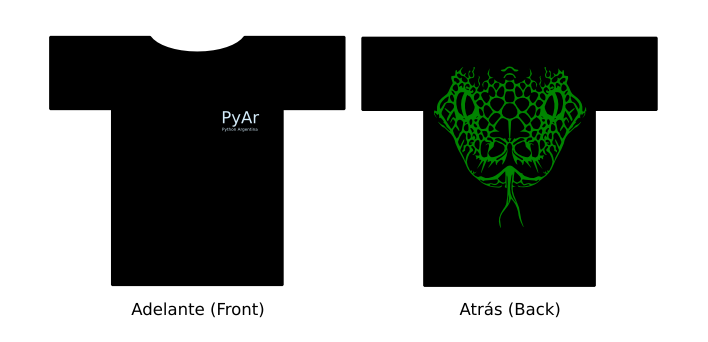

Adjuntamos el diseño de las remeras de PyAr, versión 1.0 ;-). Para el proceso de la nueva edición, en RemerasV2.
Acá pueden ver el artwork original del cual salieron, creado alguna noche allá en otra vida en la casa de un tal Pablo, junto con LucioTorre y MarianoDraghi.
Si quieren, también pueden bajarse la versión SVG:
Un poco de historia
Para aquellos que recién se suman a la iniciativa de las remeras (por lejos, la de más historia en la corta vida de PyAr...), les dejamos los links a los threads relevantes de la lista donde se tocó este tema:
28/01/2005 - Remeras PyAr - una propuesta
25/02/2005 - PyCon 2005
06/06/2005 - Se viene la reunión DIEZ !!!
07/01/2006 - Remeras
10/01/2006 - Remeras
... la lista no es taxativa, pero debería servir para ponerte en tema.
Reservá tu remera (Olvidate, no hay más stock)
FacundoBatista dixit:
Definiendo tamaños (si se agregan acá los considero con fuerte intención de compra). Hay M, L y XL para elegir (como referencia, para mí, Facu, sería L (dije que era una referencia, no que fuese útil))
Facundo Batista: 3 L, 1 MMario Zorz: 3 MAlfonso Palomares: 2 M, 3 L, 1 XLPablo Ziliani: 1 LMariano Draghi: 1 M, 1 LNubis: 1 XL, 1 LRoberto Alsina: 2 XLMauro Caceres (Cordoba): 1 LRicardo Kirkner (Buenos Aires): 2 LSantiágo Peresón (Buenos Aires): 2 XLBruno Luciani ( Ramallo , Pcia Bs As): 2 XLMartin Sarsale (AKA Runa): 1 LGuillermo Narvaja: 1 XLPablo Maccagnoni: 1 XLViviana Oviedo: 1 MRubén Presa: 1 MGuillermo Gonzalez (Buenos Aires): 2 LLeito Monk: 1 MAbel Eduardo: 1 MMauricio Ferrari (Tucumán): 1 MSebastián Lezica: 1 M, 2 LAlejandro Weil: 2 LAlejandro J. Cura: 2 XL, una para Glyph LefkowitzLucio Torre: 1 XL, 1 LSergio Gómz: 2 LLuciano Draghi: 1 LNicolas Palumbo: 1 L
PyCon 2006
Donadas: 7 (Guido van Rossum, Tim Peters, Raymond Hettinger, Alex Martelli, Anna Ravenscroft, David Ascher, Bob Ippolito)
Vendidas: 17
Discusión sobre el diseño
Podemos discutir el diseño de la segunda tanda, pero.... 쯦e vas a quedar sin tu primer remera PyAr?
MarianoDraghi: Alguna vez hablamos de agregar alguna frase divertida en la espalda, debajo del logo. Pero no terminó de definirse. La mejor candidata era:
importate __esta__
Está buena, pero es difícil de explicar a quien no conoce el lenguaje 😉
NubIs: Capaz que alguna frase podria jugar con la posicion donde esta el texto con respecto al cuerpo sino, algo como:
class pantalon(prenda):
Alineado a la izquierda, cosa que lo que le siga mas abajo sea el pantalon en sí. Es medio parecido a las gorras html que dicen <head></head>